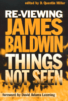

A focus on Baldwin as an experimental writer
A focus on Baldwin as an experimental writer


 A focus on Baldwin as an experimental writer
A focus on Baldwin as an experimental writer

|  |
Re-Viewing James BaldwinThings Not Seenedited by D. Quentin Miller, foreword by David Adams Leemingpaper EAN: 978-1-56639-737-7 (ISBN: 1-56639-737-5) |
"In this much-needed collection we finally find a serious consideration of this late, angry, and still articulate James Baldwin, who understands that the fire is smoldering under the brush of complacency."
—David Adams Leeming, from the Foreword
This new collection of essays presents a critical reappraisal of James Baldwin's work, looking beyond the commercial and critical success of some of Baldwin's early writings such as Go Tell it on the Mountain and Notes of a Native Son. Focusing on Baldwin's critically undervalued early works and the virtually neglected later ones, the contributors illuminate little-known aspects of this daring author's work and highlight his accomplishments as an experimental writer. Attentive to his innovations in style and form, Things Not Seen reveals an author who continually challenged cultural norms and tackled matters of social justice, sexuality, and racial identity. As volume editor D. Quentin Miller notes, "what has been lost is a complete portrait of [Baldwin's] tremendously rich intellectual journey that illustrates the direction of African-American thought and culture in the late twentieth century."
This is an important book for anyone interested in Baldwin's work. It will engage readers interested in literature and African-American Studies.
Excerpt available at www.temple.edu/tempress
Foreword by David Adams Leeming
Introduction – D. Quentin Miller
1. What is in a Sound? The Metaphysics and Politics of Music in The Amen Corner – Saadi Simawe
2. Staying Out of the Temple: The African American Church, and The Amen Corner – Michael Lynch
3. "An Irrevocable Condition"' Constructions of Home and the Writing of Place in Giovanni's Room – Kathleen Drowne
4. Another Look at Another Country: Reconciling Baldwin's Racial and Sexual Politics – Susan Feldman
5. Black-Gay-Man Chaos in Another Country – Charles Toombs
6. Masculinity and (Im)maturity: "The Man Child" and Other Stories in James Baldwin's Gender Studies Enterprise – Yasmin DeGout
7. "A Striking Addiction to Irreality" Nothing Personal and the Legacy of the Photo/Text Genre – Joshua Miller
8. The Black Boy Looks at the Silver Screen: Baldwin as Moviegoer and Witness – Cassandra Ellis
9. Manhood, Musicality, and Male Bonding in Just Above My Head – Warren Carson
10. James Baldwin, Poet – D. Quentin Miller
About the Contributors
D. Quentin Miller is Assistant Professor of English at Gustavus Adolphus College, Saint Peter, MN.
Literature and Drama
African American Studies
© 2015 Temple University. All Rights Reserved. This page: http://www.temple.edu/tempress/titles/1463_reg.html.